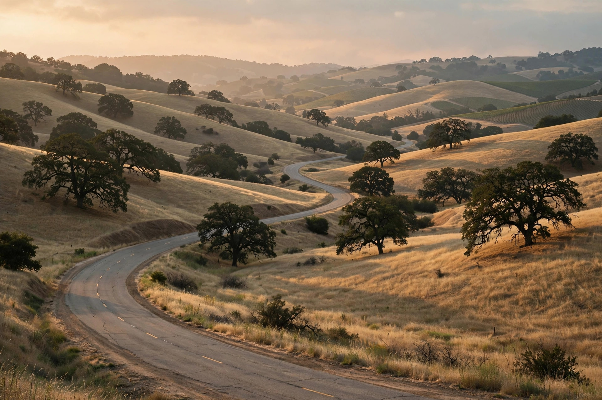

Sports Car Adventures
Slow down.
Unhurried drives through the golden hills of Amador County. Good cars, quiet roads, and nowhere to be but here.
We're remodeling — taking our time with it. Stay tuned.

Unhurried drives through the golden hills of Amador County. Good cars, quiet roads, and nowhere to be but here.
We're remodeling — taking our time with it. Stay tuned.